AURA
Em praticamente todas as culturas do mundo há menções sobre a aura, cada qual com um nome próprio. A igreja cristã costuma enfatizar a Auréola dos santos (aura em torno da cabeça) de várias formas: vejamos alguns exemplos:
| 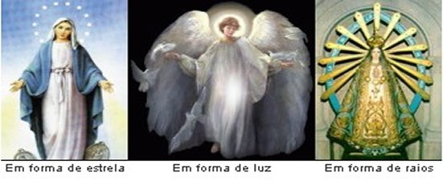 |
A Energia da Aura é conhecida por diversos nomes, entre eles: aura, corpos sutis, corpo astral, corpo etérico, auréola (energização da aura na região da cabeça).
Descrição
Não há corpo sólido, líquido ou gasoso que não tenha sua aura,desde o átomo até o globo terrestre, portanto todos os seres se revestem de um halo energético,que lhes corresponde à natureza. No homem é o conjunto das irradiações do corpo físico e do perispírito,que corresponde ao grau evolutivo de cada ser.
A aura é energia em movimentação, que se expande no contorno do corpo, refletindo saúde, sentimentos, virtudes e vícios. Sua coloração depende da elevação ou inferioridade espiritual. Ou seja, a forma e a cor da aura refletem o estado físico, mental e emocional da pessoa.
Anatomia da aura humana
Retrato da Consciência
A Aura humana é o retrato fiel da consciência de seu dono. Assim aura humana comumente invisível não se submete à hipocrisia humana porque reflete sempre a imagem exata, nua e crua, do indivíduo, representando o seu real cartão de visita, ou ficha médica extrafísica, visto ou lido por videntes, pelos desencarnados, sensitivos(as), projetores(as) conscientes e até mesmo, em certos casos, pelos animais que tanto podem simpatizar ou se assustar com a presença, aparentemente, inofensiva de uma pessoa.
Dimensões do Campo da Aura
Conforme a figura abaixo demonstra, o envoltório energético, chamado de Aura, além de interpenetrar todo o corpo denso, exterioriza-se, mais ou menos nas seguintes proporções:
| 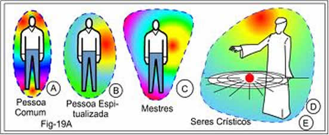 |
A- Pessoa comum ou pouco espiritualizada, 10 centímetros além da superfície do corpo Físico;
B - Pessoa espiritualizada, 50 centímetros, podendo ser percebidas várias camadas de diferentes intensidades. Um sensitivo treinado, ao aproximar sua mão espalmada do corpo de uma pessoa em tratamento, notará as diferentes camadas áuricas. Inclusive notará uma delicada resistência, como se fosse um acolchoado de camada de ar;
C – Nas pessoas espiritualmente evoluídas, nos mensageiros espirituais e mentores dirigentes, suas respectivas auras espalham-se por alguns metros além de seus corpos. Por isso, quando vistos pelos clarividentes, apresentam-se envoltos em radiante luminosidade;
D- Nos Seres Crísticos suas auras envolvem todo um planeta e seus satélites;
E - Ao nível dos Arcangélicos Criadores, aqueles seres compositores de mundos, a emanação áurica proveniente deles permeia todo um sistema planetário;
F – E, do indescritível SER Supremo, sua divina emanação sustem todos os universos, imagináveis e inimagináveis. Isto é, o campo de Sua Aura é inconcebível à mente humana. É o eterno Onipresente.
Aparência da Aura
Sua aparência que pode ser classificada pela intensidade da luminosidade, e pela coloração, revela as seguintes características, que são reflexos do que esteja transcorrendo com a pessoa:
a) – Quando apagada; a pessoa está perturbada, retraída, enferma ou é antipática;
b) – Quando brilhante; a pessoa está calma, sadia, agradável ou é envolvente.
O que revela:
| 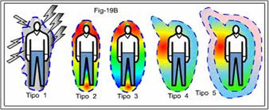 |
Textura
A textura, ou consistência da aura, também faz parte de sua linguagem demonstrativa dos reais sentimentos que naquele momento evoluam da pessoa. A figura acima torna mais compreensiva essa questão. Vamos á descrição:
Tipo 1 – Consciência física voltada para a malícia ou para a revolta. Há uma verdadeira tempestade ocorrendo na psicosfera dessa pessoa, que se sobrecarrega de energias envenenadas.
Tipo 2 – Consciência física voltada para as questões meramente materiais. Embora mais calma que a descrita no tipo 1, entretanto, continua uma aura densa e sufocante.
Tipo 3 - Consciência física pensando nas questões espiritualizantes. A aura se apresenta menos rígida. São as emanações de pensamentos construtivos.
Tipo 4 - Consciência física ligando-se à espiritualidade superior. A aura, embora muito radiante, se torna como uma névoa esvoaçante, de tão leve. Tende a elevar-se em determinados pontos, atraída por nobres inspirações que lhe chegam.
Tipo 5 - Consciência fora do físico, em êxtase. Ligada aos planos da Criação, situados além do plano Mental inferior. Ainda mais leve e de suave coloração azul-rosa, passa a ser envolvida por emanações vindas de planos superiores. Essas emanações se tornam perceptíveis na forma de emoções. Um delicioso e lânguido envolvimento. Uma alegria interior, quase que indescritível.
Acoplamento áurico
Acoplamentos – As auras interagem umas com as outras, de pessoa a pessoa, formando o chamado acoplamento áurico. Acoplar significa ligar, juntar. Os acoplamentos se dividem em duas categorias: simpáticos e antipáticos.
| 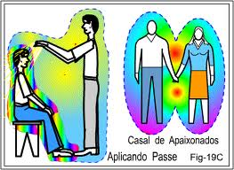 |
Acoplamentos Simpáticos- (Fig-19C). Casal de apaixonados; aplicação de passes energéticos; gestante e o feto; médium e mentor; médium de incorporação e a entidade comunicante, e tantas outras modalidades.
| 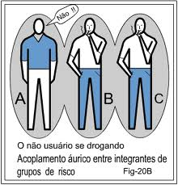 |
Acoplamentos Antipáticos- (Fig-20B). Casal desapaixonado; proximidade de pessoa invejosa; proximidade de pessoa sem objetividade na vida e que apenas causa embaraços aos que alguma coisa realizam; proximidade de pessoa intimamente devassa e inescrupulosa; obsidiado e obsessor; pessoas amotinadas, ou uma multidão enfurecida.
| 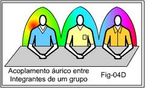 |
Acoplamentos em Trabalhos de Energia- (Fig-04D) Quando todos os integrantes de uma equipe assistencial, seja de que modalidade for, sentados em grupo, ou próximos uns dos outros, mantém atitude de concentração e respeito ao que fazem, suas auras interligam-se formando o que é chamado popularmente de corrente energética.
Na figura a cima apresentamos a situação onde algumas pessoas estão unidas para fazer algum tipo de trabalho, e que utilizam suas energias, por isso, suas auras se interligam.
Evidencia-se que, para que nessa corrente refulja a harmonia, necessário será o sentimento de simpatia entre todos. Se um só dos integrantes, por inadequação ao grupo, estiver movido de sentimento contrário, haverá impedimento para se completar o acoplamento simpático. Qualquer pensamento duvidoso gerará um turbilhão de negatividade em todo o conjunto. Razão porque um grupo só passa a trabalhar quando todos os integrantes se equilibram em respeito espontâneo entre si. Fora disso, os trabalhos que o grupo possa vir a apresentar serão meros ensaios. Nada, porém que tenha seqüência duradoura, pois a inexistência do acoplamento áurico visando objetivos nobres deixa todo o grupo à mercê de invasões indesejáveis.
Foto Kirlian
Fotografia Kirlian, "Kirliangrafia" ou, num termo mais moderno, Bioeletrografiaou Bioeletrograma, é o método de fotografia pelo qual se pode tirar foto da Aura. Descoberto pelo Russo Semyon Davidovich Kirlian, através da Kirliangrafia, é possível registrar e analisar a aura de uma pessoa. Foto Kirlian cientificamente consiste na fotografia da ionização dos gases e vapores exalados pelo corpo, através dos poros da pele.
| 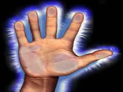 | 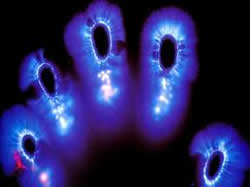 | 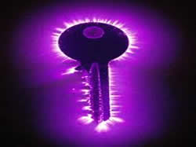 |
| 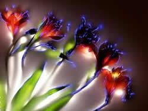 | 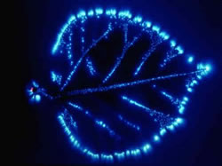 | 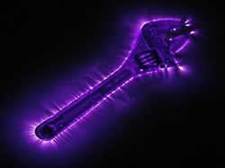 |
Técnica
No procedimento para obter uma foto Kirlian, o objeto, como por exemplo uma folha ou a parte do corpo de uma pessoa (geralmente os dedos), é colocado próximo à emulsão fotográfica, em uma chapa isolante com um metálico por baixo, o qual está ligado ao aparelho de fotografia Kirlian que gera uma corrente elétrica pulsante de alta freqüência, baixa corrente e alta tensão (normalmente de cinco mil até vinte mil volts). Na foto obtida por este processo, aparece uma luminescência felpuda ao redor dos contornos dos objetos fotografados, resultantes da ionização dos gases que ali se encontram, onde fótons são produzidos e ali ficam registrados.
| 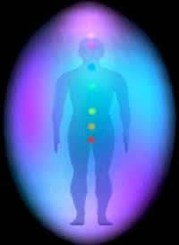 | 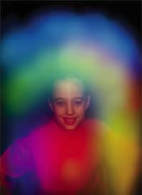 | 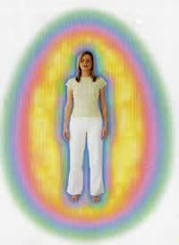 |
Exercícios para detectar a aura
| 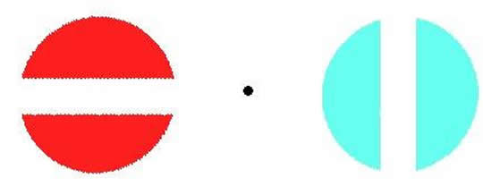 |
fase 1 - posição sentada
Posicione-se a cerca de 1,5m de distância do desenho e olhe fixamente, mas de forma distendida, como quem fita o vazio, para o ponto negro entre os dois globos coloridos. Depois de alguns segundos perceberá umas luzes coloridas ou luminosas que se projetam aos costados e ao redor das imagens.
Não contente-se com as primeiras e delgadas marcas que aparecem, mas treine até visualizar grandes e coloridas nuances em ambos os globos e fora destes. Observe que inclusive ao redor do ponto negro aparece cores e luzes.
fase 2 - posição sentada
Da mesma forma que para o exercício anterior deve-se posicionar o desenho à altura do nariz e estabelecer uma distância de 1,5m da imagem. Posicione sua mão em frente e marque um pouco abaixo do ponto negro como a zona de observação. Outra maneira é deslizar a vista desde a ponta do nariz até o ponto negro, forma que para muitos resulta mais fácil.
Quando alcançar ver que aparecem quatro globos, puxe os dois do meio até formar um único, sendo que poderá visualizar uma cruz branca, que é criada pela sobreposição de um globo de cada cor. A princípio poderá ser difícil manter a cruz estabilizada, sem deslizar para fora outra vez, isto indica que seu cérebro não está sendo utilizado devidamente em ambos os hemisférios.
Quando a comunicação entre hemisfério esquerdo, que comanda o olho direito, hemisfério direito, que comanda olho esquerdo estejam bem conectadas será muito fácil manter a cruz estabilizada e inclusive brincar com os globos, invertendo as posições, ou seja, o de cima envia para baixo, o de baixo para cima, metade de cada cor, sobrepor os dois e misturar as cores, etc.
Geralmente as mulheres observam o traço horizontal (HD) mais nítido que o vertical, sendo que os homens usualmente percebem o vertical (HE) em primeiro plano. Isto indica que um dos hemisférios cerebrais é dominante sobre o outro, sendo que o objetivo é lograr o equilíbrio entre os dois lados, portanto trate de fundir as duas imagens até observar uma cruz perfeitamente balanceada e estável, com os dois braços de similar intensidade, o que indica um perfeito equilíbrio entre ambos hemisférios cerebrais. Depois de alguns minutos a imagem que foi formada com os dois globos centrais permanece flutuando no ar ao mesmo tempo que adquire uma intensidade rosada ou violeta. Sua mente se tranqüiliza, seu cérebro está renovado, seus olhos estarão mais fortificados e treinados para ver a aura. Afaste sua mão, abra os dedos e observe a parte lateral e entre os dedos para observar sua aura. Se preferir pode olhar-se em um espelho, mas busque um lugar que tenha uma parede branca às suas costas e também prefira luzes difusas para facilitar a visualização.
Este exercício é extremamente benéfico para aumentar a energia vital além de ser curativo quando praticado por mais de cinco minutos.
Segundo exercício.
fase 1 - posição sentada
Sente-se com as costas retas e os pés apoiados no piso, una as duas mãos, as palmas se tocando em posição de oração.
Feche os olhos e sinta a temperatura de sua mão, os pontos mais aquecidos, as saliências os pontos que quase não se tocam e a textura de sua palma. Então separe-as lentamente, apenas alguns milímetros sem permitir que se perca a sensação de calor que percebe nas palmas. Aproxime-as novamente e repita o exercício como se tivesse um elástico que puxa enquanto você afasta um pouco mais ambas as palmas. Logo você vai sentir que suas as mãos emitem uma onda de força, como se estivessem envoltas em uma espécie de plumagem macia que até possa sentir a cor, mesmo sem ver. Mantenha o jogo de aproximar e afastar as mãos por alguns minutos até que sinta que estão bem aquecidas.
Esfregue vigorosamente uma palma na outra e leve na direção do rosto, mas sem tocar a pele.
Se você sentiu algo parecido como uma pluma suave se movendo na face passe para a fase seguinte, caso contrário continue treinando.
fase 2 - posição sentada
Esfregue vigorosamente as mãos, estique os braços e olhe ao redor dos dedos, mas como se olhasse um desenho em terceira dimensão, ou seja, sem fixar o olhar nas mãos, mas atravessando-as e buscando ver além de onde estão posicionadas.
O exercício de visualização deve ser feito apenas dez minutos, pois o músculo ocular se cansa logo. Repita todos os dias sem desanimar, que ao fim de dois ou quatro meses poderá ter resultados mais promissores. Seja persistente, não interrompa o treinamento e nem tente recuperar em um dia o que não fez em outros dois.
O primeiro resultado será um tênue vislumbre de uma luz mais clara, como se fosse um "fog", que poderá ser visto só em determinadas ocasiões. É uma indicação de que você está fazendo progressos, mas deve perseverar com o experimento até que possa ver uma luz azul-claro, definida e estável onde as pontas dos dedos se tocam.
Observando a Aura de Outras Pessoas
Pratique num ambiente suavemente iluminado e que tenha paredes claras. Fique a uma distância de cerca de três metros da pessoa que vai observar. Deve estar posicionada de tal forma que todo seu corpo e área ao seu redor sejam visíveis sem móveis ou quadros por perto.
Comece focalizando a testa do parceiro. A partir dela, faça movimentos circulares com seus olhos, no sentido horário, até alcançar todo o corpo da pessoa em frente. Faça o mais rápido que puder, circulando diversas vezes para que se exercitem os olhos. Retorne o foco para a testa, onde deve permanecer por cerca de vinte segundos. Suavize a área enfocada olhando numa área mais ampla, sem fixar em nenhum ponto (como se olhasse um destes desenhos de "terceira dimensão").